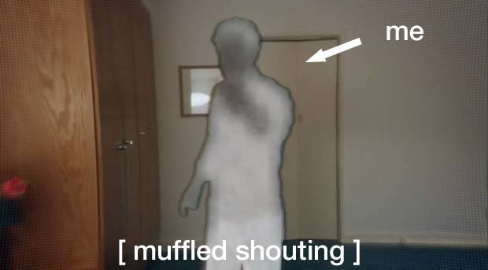
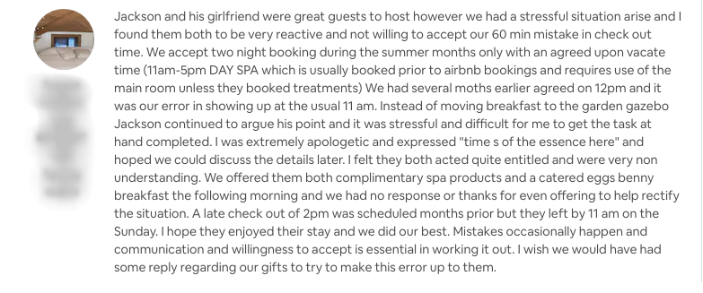
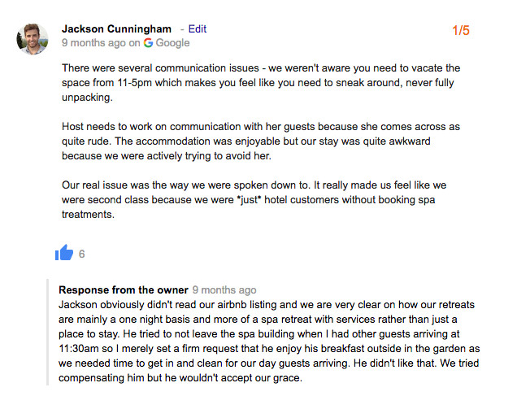
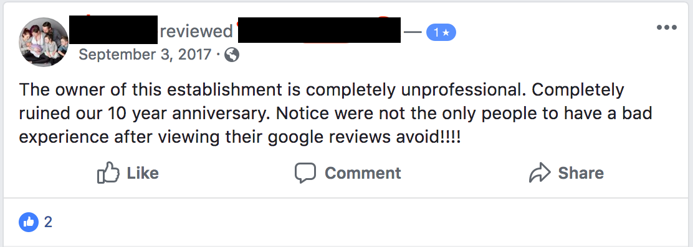
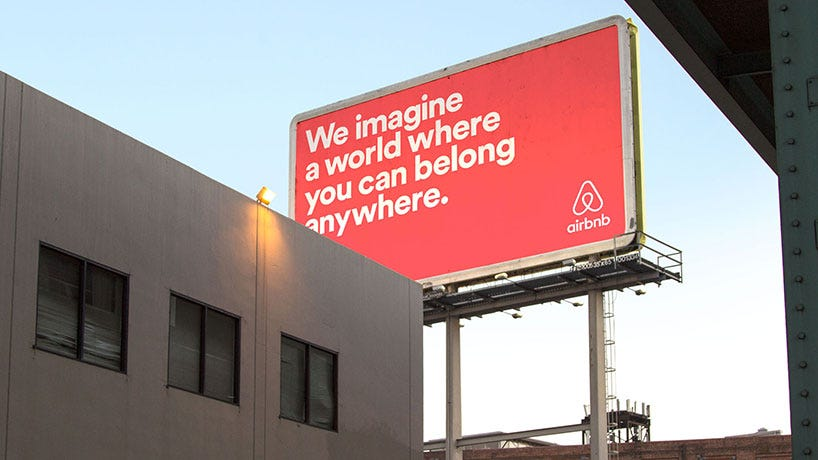

Dear Jackson,
We regret to inform you that we’ll be unable to support your account moving forward, and have exercised our discretion under our Terms of Service to disable your account(s). This decision is irreversible and will affect any duplicated or future accounts.
Please understand that we are not obligated to provide an explanation for the action taken against your account. Furthermore, we are not liable to you in any way with respect to disabling or canceling your account. Airbnb reserves the right to make the final determination with respect to such matters, and this decision will not be reversed.
At first, I wasn’t concerned. Surely there must be a misunderstanding. After all, I’ve been a loyal AirBnB evangelist from the early days — using it frequently for business travel in the early days of tuft + paw (my high end cat furniture store, PSA: we’re hiring!). I referred dozens of friends when it first launched. I even convinced my parents to list their vacation properties.
After reaching out to support, I received the following unsettling email.
Hi Jackson,
Please understand that we are not obligated to provide an explanation for the action taken against your account. Additionally, we consider this matter closed and will no longer reply to any inquiries regarding your account.
Okay, this is a tough spot. Somehow I’ve violated the terms of service, but they won’t tell me which ones. And I can’t communicate with them anymore.
Seems a little harsh.

After discussing with my girlfriend, the only thing we could think of was that we had recently had a very uncomfortable AirBnB experience with a rude host.
Here’s a brief summary of the incident that likely got me banned.
After booking the weekend, we were told that we’d need to vacate the premises from 12–4pm because the room was located in a spa retreat.
The conflict arose when the host entered the room an hour early, unannounced. She forgot to let us know she’d be coming an hour early with spa guests. We weren’t dressed but she continued setting up while we eventually scurried outside in front of the spa guests.
When the trip was over, we decided not to leave a review after giving her the benefit of the doubt that it was just a bad day. The property itself was great.
A few weeks later, I saw that the host left me a critical review with completely distorted details from what had actually happened.

Because the review period had passed on AirBnB and I felt the need to do some justice to my side of the story, I left a review on Google instead. The host has received a number of similar complaints so it definitely wasn’t an isolated incident.



The part that’s especially poetic to me is that AirBnB touts a firm brand message of community and connectedness with their “Belong Anywhere” campaigns but the frightening reality is that any individual user is completely disposable, without a shred of appeal to due process. I’m really thankful that I wasn’t reliant on AirBnB income like so many of my friends.
But let’s call it like it is. This policy leverages the company’s power over the individual user to a cruel and unprecedented extent. And it’s in laughable contradiction to the brand’s inflated idealism.

Moving forward, I question whether these types of suspensions should be allowed from the tech giants without any oversight or regulation. At what point does a company become pervasive enough in everyday life that they owe users an explanation or warning before dropping the guillotine? Or is this all part of an ongoing trend, toward something like the Chinese Social Credit Score system, where the consequences of not maintaining a high rating are socially crippling?
We’re becoming increasingly dependent on a handful of major tech giants to get through our basic daily routine. Imagine waking up one day and no longer being able to check your Gmail, buy things on Amazon, or book an Uber.
It all feels very 1984. Or Black Mirror. The one with Jon Hamm.
— —
Co-authored by Jackson and Jeff Cunningham.
You can find me on Twitter or by visiting my cat furniture store (PSA: WE’RE HIRING). It would mean a lot.

Source: Medium (local mirror). Published 2018-07-18.